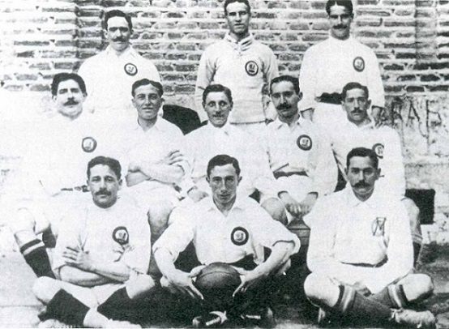

Early Years of Real Madrid (1902-1945)
Real Madrid's origins go back to the times when football was first introduced to Madrid by some students from the Institucion Libre de Ensenanza, which had several people that have graduated Cambridge and Oxford Universities. They founded the La Sociedad (The Society) which was the only one in Madrid. They were playing on Sunday mornings at Moncloa. However, a conflict between a few of the players caused some of them to create a new club called Nueve Sociedad de Football (New Society of Football). Among of those people that founded the new club was Julian Palacios who is recognized as the first Real Madrid preseident. Just three years after the club was founded in 1905 they managed to win their first title after defeating Athetic Bilbao in the Spanish Cup final. On 4th of January 1909 the club had become one of the founding sides of the Royal Spanish Football Federation, when the club president Adolfo Melendez signed the agreement of the Spanish FA. in 1912 the team stopped moving bwetween grounds and moved to the Camp de O'Donnell. The clubs name was officially changed to Real Madrid in 1920 after it was granted the title of Real(Royal) by King Alfonso XIII. In 1929 the Spanish League was found and not too long after it was found Real Madrid managed to win their first League Title in the 1931-32 season, and managed to retain the title the following season. Keeping the title for two consecutive years made them the first team to win the championship twice. In 1931 the arrival of the Second Spanish Republic caused the club to lose the title of Real and made them go back to beingg named Madrid Football Club. Football continued during the Second World war and in 1943 Real Madrid beat Barcelona 11-1 in the second leg of the semi-finals in Copa del Rey.
 |
| Julian Palacios the first president of the club in 1900-1902 |
|---|
|  |
| Madrid FC team in 1906 |
Santiago Bernabéu and European success (1945–1978)
Santiago Bernabei became the president of Real Madrid in 1945. While he was the president the stadium Estadio Real Madrid Club de Futbol and the training facilities Ciudad Deportiva were rebuilt after the damage caused by the Spanish Civil War. In the 1950s former Real Madrid Amateurs player Miguel Malbo founded the youth academy of Real Madrid also known as La Fabrica. In 1953 he started the strategy to sign world-class players from abroad, the most important one was Alfredo Di Stefano. In 1955 Bernabeu, Bedrignan, Gusztav Sebes and a French sports journalist created a tournament in which the champion teams around Europe would play, under invitation. That eventually became what is today known as the UEFA Champions League. It was under Bernabeu's guidance that Real Madrid established itself as a massive force both in Spanish and European Football. The club managed to win the European Cup five times in a row between 1956 and 1960. After thosefive consecutive successes Real Madrid was permanently awarded the original cup and also earned the right to wear the UEFA badge of honor. The club won their sixth title in 1966 as they defeated the Partizan Belgrade 2-1 in the final. This team became known as the Ye-Ye as the team was entirely composed of the same nationality players, which was the first in the competition. In the 1970s, Real Madrid won five league championships and three Spanish Cups. In 1971 the club played their first UEFA Cup Winner's Cup, where they lost 2-1 to Chelsea in the finals. On the 2nd of July 1978, the club president Santiago Bernabeu died while the World Cup was played in Argentina. The following year, the club organized the first edition of the Trofeo Santiago Bernabeu in memory of its former president.
 |
| Alfredo Di Stefano leading the club to win 5 European Cups (currently Champions League) consecutively |
|---|
| Amancio Amaro caption of the Ye-Ye team of the 1960s |
Quinta del Buitre and sustained success (1980–2000)
By the earlly 1980s, Real Madrid had lost its grasp on the Liga title until a new cohort of home-grown stars brought domestic success back to the club. Spanish sport journalist gave this generation the name of La Quinta del Buitre, which was created from the nickname given to one of the members, Emilio Butragueno. In the second half of the 1980s, Real Madrid have won two UEFA Cups, five Spanish championships in a row, one Spanish cup and three Spanish Super Cups. Finally in 1998 Real Madrid have ended the 32 year wait for its seventh European Cup as they defeated Juventus 1-0 in the final with a goal from Mijatovic. Vicente del Bosque took over as a choach for the last season of the century. The team was led by some of the older veterans such as Fernando Hierro, Fernando Redondo, Roberto Carlos and Raul Gonzalez. However, Real Madrid added some of the young talents like Fernando Morientes, Guti and Iker Casillas. The veterans also supported the arrival of Steven McManaman and Nicolas Anelka from the English Premier League. By beating Valencia on the Champions League final with a score of 3-0 real Madrid managed to win yet again another European Cup.
| Real Madrid lineup of the Champions League final in 2000 |
|---|
Real Madrid eras (2000 - present)
Florentino Perez era (2000-2006) In 2000, Florentino Perez was elected club president. He vowed in his campaign to erase the club's €270 million debt and modernize the club's facilities. However, the primary electoral promise that propelled Pérez to victory was the signing of Luís Figo from arch-rivals Barcelona. The fellowing year the club started assembling the Galacticos team by signing new global star every summer, which included Zinedine Zidane, Ronaldo, Luís Figo, David Beckham and Fabio Cannavaro. The 2005–06 season began with the promise of several new signings: Júlio Baptista (€24 million), Robinho (€30 million) and Sergio Ramos (€27 million). However, Real Madrid suffered from some poor results, including a 0–3 loss at the hands of Barcelona at the Santiago Bernabéu in November 2005. Shortly after, Real Madrid were eliminated from the Champions League for a fourth successive year, this time at the hands of Arsenal. On 27 February 2006, Florentino Pérez resigned. Ramon Calderon era (2006-2009) Ramón Calderón was elected as club president on 2 July 2006 and subsequently appointed Fabio Capello as the new coach and Predrag Mijatović as the new sporting director. Real Madrid won the Liga title in 2007 for the first time in four years, but Capello was nonetheless sacked at the end of the campaign.[59] The title was won on 17 June, where Real faced Mallorca at the Bernabéu while Barcelona and Sevilla, the other title challengers, faced Gimnàstic de Tarragona and Villarreal, respectively. At half-time, Real were 0–1 down, while Barcelona had surged ahead into a 0–3 lead in Tarragona. However, three goals in the last half-hour secured Madrid a 3–1 win and their first league title since 2003. Florentino Perez era (2009-present) On 1 June 2009, Florentino Pérez regained Real Madrid's presidency.[61] Pérez continued with the Galácticos policy pursued in his first term, buying Kaká from Milan for a record-breaking (in pounds sterling) sum of £56 million,[62] and then breaking the record again by purchasing Cristiano Ronaldo from Manchester United for £80 million. José Mourinho took over as manager in May 2010.[64][65] In April 2011, a rare occurrence happened when, for the first time ever, four Clásicos were to be played in a span of just 18 days. The first fixture was for the league campaign on 17 April (which ended 1–1 with penalty goals for both sides), the Copa del Rey final (which was won by Madrid 1–0 a.e.t., bringing them their first trophy in the second Galáctico era) and the controversial two-legged Champions League semifinal on 27 April and 2 May (Barcelona won 3–1 on aggregate and ultimately won the tournament). In the 2011–12 season, Real Madrid won La Liga for a record 32nd time in its history. Real Madrid also broke numerous club-level records, including 100 points reached in a single season, a total of 121 goals scored, a goal difference of +89 and 16 away wins, with 32 wins overall.
 |
| Beckham and Zidane were considered Galácticos. |
|---|